@当前位置:
网站首页::虚拟导览
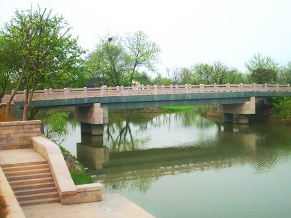
寿堤
寿堤位西溪湿地三期内，与五常港并行，南北走向，全长约3600米，宽4.5米，是西溪湿地中最长的一条堤。南起五常大道湿地三期入口处，北至文二西路南侧的水上巴士码头，两岸纵横交错的水域，百年的树木码头，形成自然天成的生态景色。将龙舌环绿、慈航送子、龙舟胜会、洪园隐秀、幔港寻幽、桥亭思母、柿林秋色、村埭田园等西溪美景串珠成链。
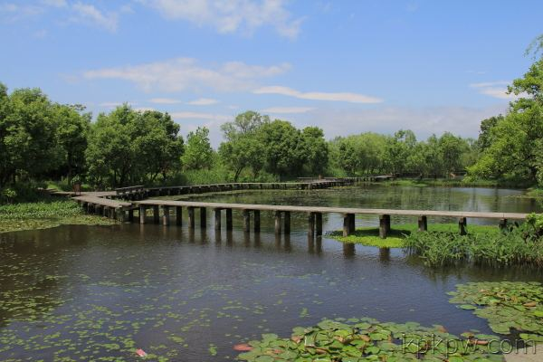
绿堤
绿堤是一条东西向的长堤，全长1600米，宽7米，两侧多接鱼塘，鱼塘基上植被丰富，生态环境良好，景观优美。在绿堤的东部和城市相接的区域就坐落着“一带四区”西溪湿地植物园——绿堤湿地植物群落展示带和包家埭水生植物群落展示区、西侧水生花园展示区、东侧水生花园展示区、湿地经济植物展示区。绿堤穿越了西溪的核心保护区，自西向东串起了湿地生态植物园和湿地生态主要科研科普项目等，是西溪的一条生态堤。
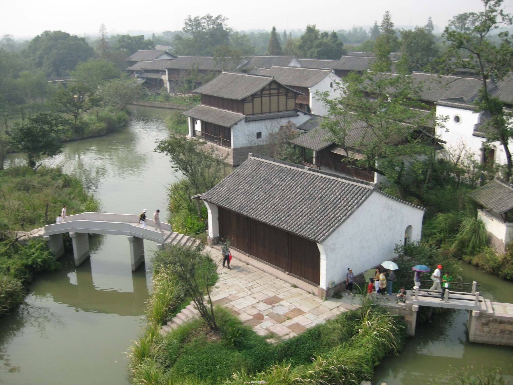
福堤
福堤全长2300米，宽7米，总面积约0.8平方公里,位于蒋村港的西面、深潭口港的东面，南接天目山路，北连文二西路，自南向北贯穿了整个西溪国家湿地公园，以生态为基调、科普特色的文化长堤，沿途串联了高庄、交芦庵、曲水庵、河渚街、洪钟别业等西溪二期主要景点，中间串起六座“福”字桥，分别名为元福桥、永福桥、庆福桥、向福桥、广福桥、全福桥。
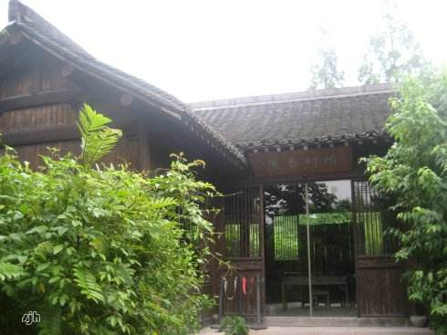
泊庵
泊蓭位于秋雪庵的南面，明末清初钱塘人邹孝直（名师绩）的庄园。芦苇丛生，野趣盎然，从高处远远望去，整片庄园似仙岛泊于水上，因此得名。其中自在堂、空明轩两组建筑与拈花舫前后呼应，由南向北分别构成三个空间。
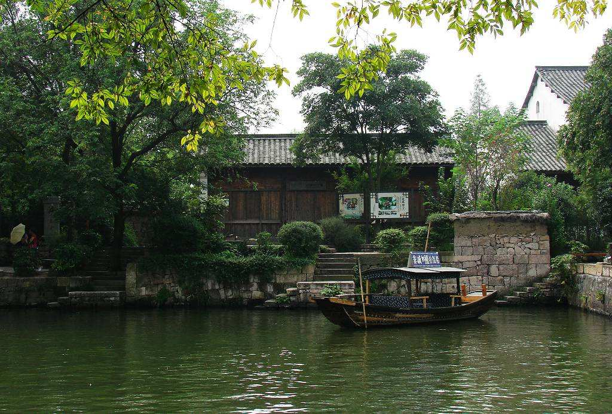
烟水渔庄
烟水渔庄位于烟水庵的南部，是西溪农耕渔事文化展示、游客休闲、餐饮的中心。借鉴了清代文人陈文述《秋雪渔庄》的诗歌意境，取柳烟、炊烟、水烟三烟之妙，因此得名。此景点有桑蚕丝绸故事、婚姻民俗、西溪人家等展览馆，展现水乡民居的地方特色和居民质朴的农耕文化。
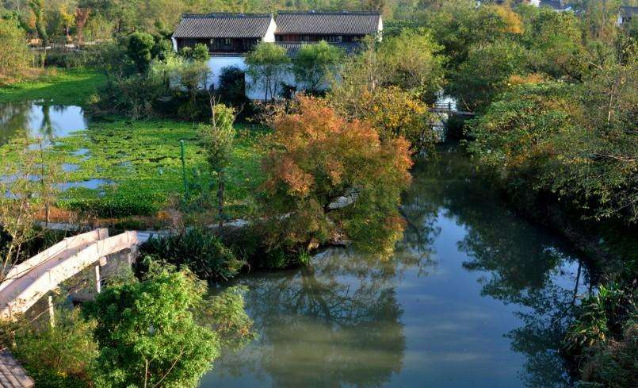
深潭口
深潭口又名深潭港，据《南漳子》记载：“深潭口，非舟不渡；闻有龙，深潭不可测。”因此得名，是西溪主要的民俗文化展示中心。西溪龙舟胜会每年都在此举行。
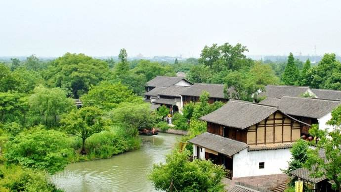
河渚街
河渚是杭州西溪湿地的一处古地名，在西溪湿地国家公园的东北部，主要入口在西溪湿地的福堤，距离西溪湿地福堤文二路入口四百米左右。河渚是西溪湿地的一处古地名，在西溪东北。恢复的河渚街是一条以休闲、商贸集市、观光旅游为一体的民俗商业街，展示西溪特有的民俗文化和西溪物产等。可在茶馆品茗，在商铺购买西溪小花篮、蓝印花布、西溪米酒、糕团、古荡盘柿、竹笋、西溪鱼制品等土特产，在蒋相公祠堂瞻仰赈济扶贫、乐善好施的蒋氏三兄弟，在古戏台欣赏越剧表演，在龙舟展示馆参观西溪龙舟发展史，欣赏工匠的龙舟雕刻和模型制作。
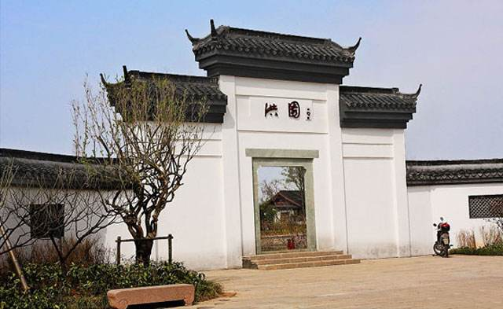
洪园余韵
洪氏家族是宋、明、清时期著名的“钱塘望族”，明尚书洪钟晚年归隐于西溪五常，建洪园，为休憩吟咏之所，槿篱茅舍，小桥横溪，此后洪氏家族在五常繁衍生息 数百年，涌现出了洪楩、洪升等一批历史名人。当年，洪钟承先世遗业，青缃盈积。构书楼，课子弟，闲与老农村翁究晴雨、话桑麻，怡然自乐。此次复建，尽现园 内峰石崩云，花木扶疏胜景。体现宁静淡泊、远离喧嚣的归隐文化。
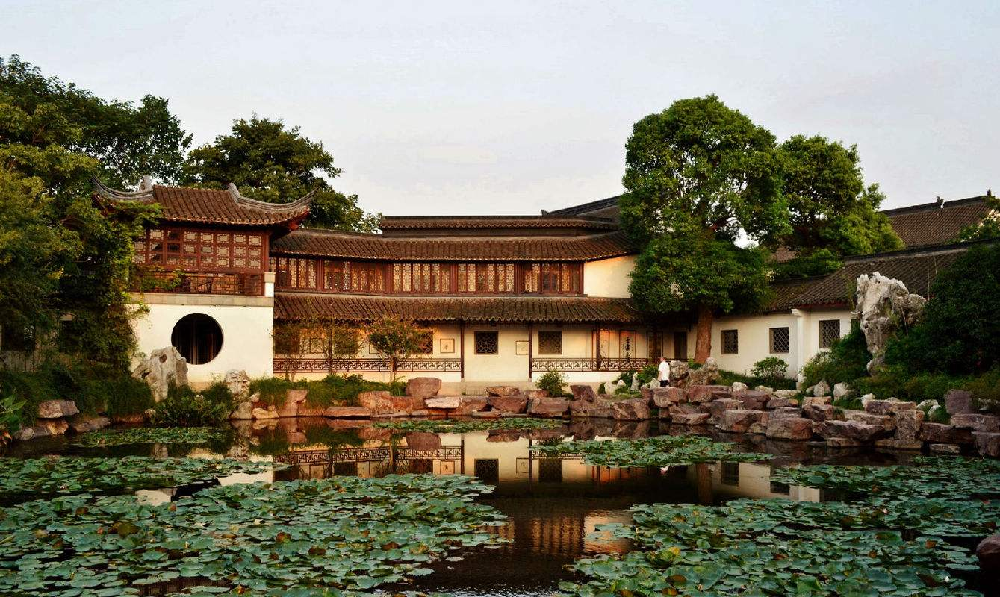
高庄
高庄又名西溪山庄，俗称西庄。始建于清顺治十四年（1657年）至康熙三年（1664年）之间，是清代文人高士奇（1645年-1704年）的山庄别业，具有典型的明末清中期前宅后园的官宅特点。庄内由高宅、竹窗、捻花书屋、桐荫堂、蕉园诗社等建筑组成。
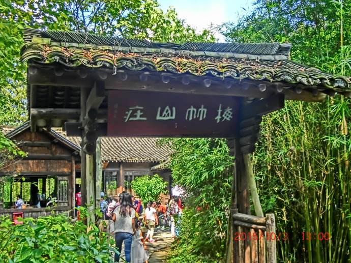
梅竹山庄
梅竹山庄为清钱塘文人章黼（字次白）（约1777年-1857年）的山庄别业，他在庄外种植大量梅花与翠竹，其又人性高洁，自比梅竹，又好读书、擅字画，常邀朋唤友至此吟诗作画，因此得名。梅竹山庄主要有“梅竹吾庐”、“萱晖堂”、“虚阁”三个主体建筑，为西溪主要的赏梅区域。
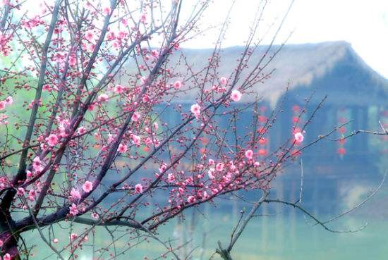
西溪梅墅
西溪梅墅位于公园的东南片，毗邻西溪精华区域“秋雪庵”保护区，是一组田园农舍风格的建筑，主要有西溪梅墅、香雪屋、探春亭、共山小筑等。主体建筑为木板面，土坯墙；屋顶作悬山顶，高低错落有致，体形参差变化。景点以田园农舍为载体，以梅文化为内涵，以旷达开远的环境美为特色，为西溪主要的赏梅区域。
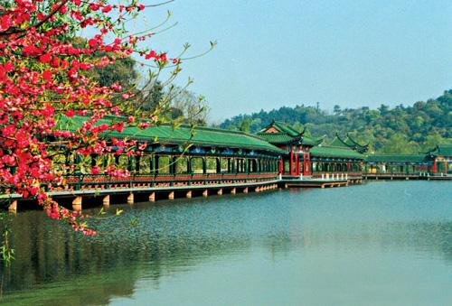
西溪水阁
西溪水阁位于西溪梅竹休闲区内，是一组文人别业式建筑，居所临水而建，是自古文人墨客在西溪隐居藏书之地。水阁由两组建筑组成，东为“拥书楼”，西为“蓝溪书屋”。水阁的墙面，下部山墙为夯土墙，上部为露出梁架的编竹夹泥墙，乡居气息浓郁。
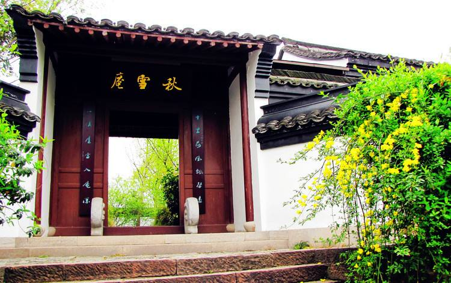
秋雪庵
秋雪庵位于西溪河渚湿地最热心的水域，始建于宋淳熙（1174年-1189年）年间，初名“大圣庵”。明末西溪沈氏兄弟重整建筑，延请名僧住持庵堂；明末陈继儒取唐人“秋雪蒙钓船”诗意题为“秋雪庵”。民国时期经南浔名士周庆云（字梦坡）重修，是全国诗词研究基地，也是西溪重要的寺庵之一。秋雪庵为两进庭院布局结构，第一进院落中的建筑以佛教文化为主要功能；第二进院落中至民国初年加设两浙词人祠堂，供奉千余词人名录，门前铺有石板步道。
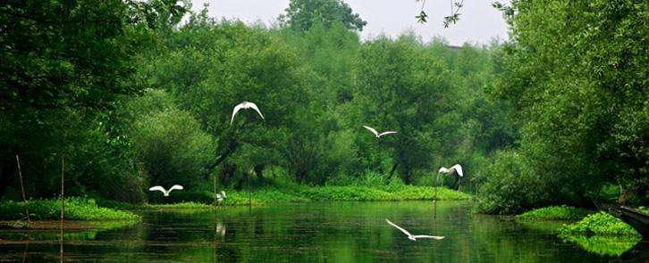
莲花滩观鸟区
莲花滩观鸟区位于莲花滩区域，面积约35公顷。整体水域比较浅，局部为深水区，生长着茂密的水生植物，适合涉禽类的水鸟生活。观鸟区内遍布小岛、游步道、林地，为西溪湿地涉禽鸟类的主要栖息地，是西溪涉禽类水鸟的主要观赏区。
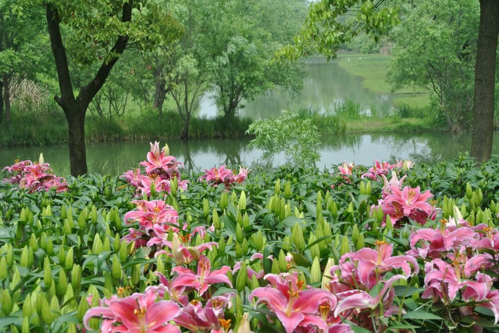
杭州湿地植物园
杭州湿地植物园总占地约55公顷，有4个主厅，分别为序厅、湿地与人类厅、中国厅和西溪厅，展示了西溪特色的基塘系统、河流、滩渚等生态多样性中的湿地植物；其内容包含了全国范围内水生、湿生植物的收集、栽培和展览、休闲游览、科研科普教育、水生植物的配植示范和引种繁育。
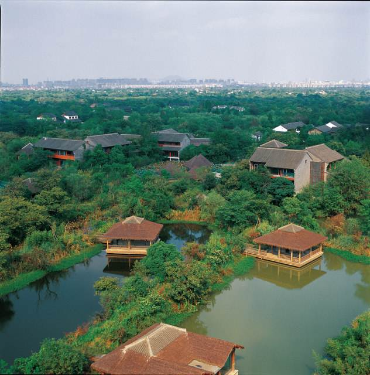
百家溇
百家溇原为西溪近周家村的自然村落，其周浜溇密布，河道纵横，植物丰茂，地僻幽隐。据传，太平军曾在此建营筑垒。现在原址建有会议中心、餐饮会所。
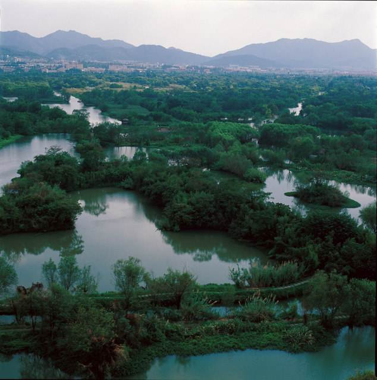
虾龙滩生态保护区
虾龙滩生态保护区是湿地公园中最大的一块自然生态保护区，这里拥有众多水生陆生植被和野生动物，更是各种鸟类的天堂，为了让游客欣赏到群鸟纷飞的情景，我们在保护区内设置了观鸟台，鸟儿灵动的生气会不时给游人带来惊喜。
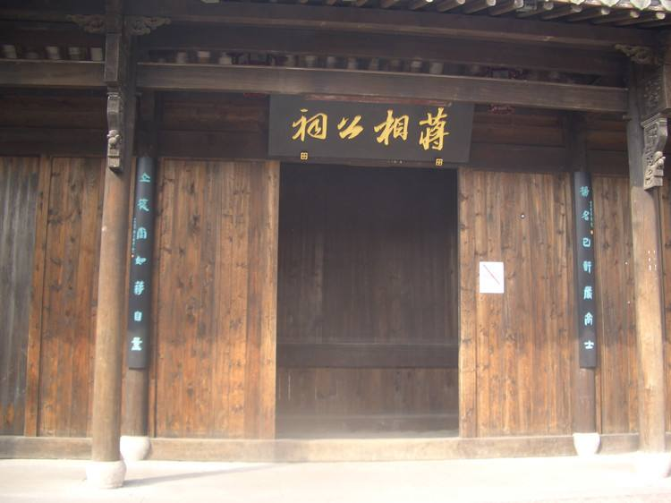
蒋相公祠
蒋相公祠，据蒋村《广福庙志》记载，世称“蒋公庙”、“竹林居”。初建于南宋建炎年间，蒋氏宗族集资筹建蒋家祠堂，堂内供奉蒋氏先祖灵牌。将侯崇仁、弟崇义、崇信三人，承父业，寄居住杭城惠济桥傍开米行，行好事，献粮于朝，济米于贫民，并信任籴米者自量，世称“蒋自量”。北宋宣和年间，官府拨资立庙。南宋咸淳三年，宋皇帝赵降敕赐庙额《广福》，追封崇仁为孚顺侯，崇义为孚惠侯，崇信为孚佑侯。今复建于河渚街。
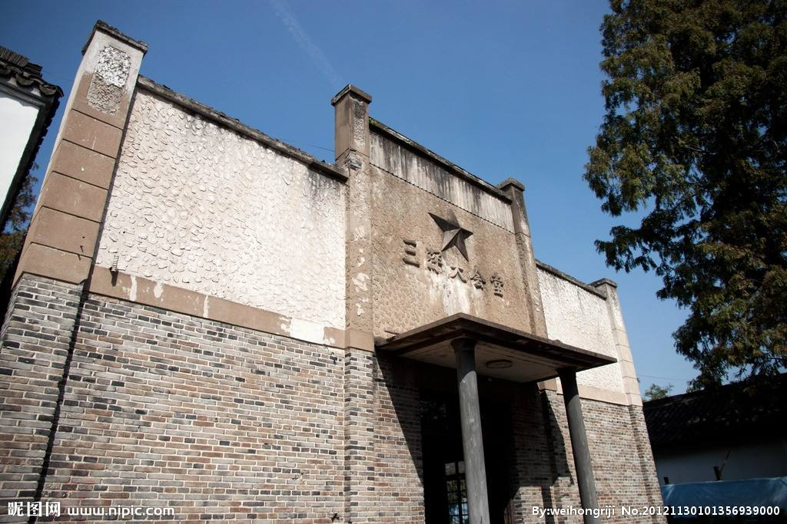
三深大会堂
三深大会堂原样保留了文革时期的建筑样貌。大会堂内的墙壁上随处可见文革时期的毛主席画像。堂内左右两侧各摆放一排西溪湿地的美景摄影照片供游人欣赏。
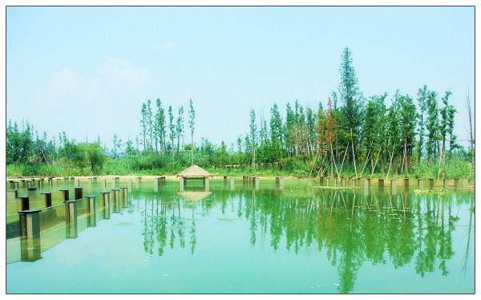
西溪水下生态观光长廊
西溪水下生态观光长廊位于湿地植物园内，是目前国内最长的一座室外水下生态观光长廊，总长137米。游客拾级而下，两侧水生植物及鱼虾类犹如彩色画卷徐徐展开。游长廊最大的看点还是可以观察到各类沉水植物和观赏鱼类。在其东侧建有精品水生植物展示区，区内精心配植水生植物和观赏鱼类。
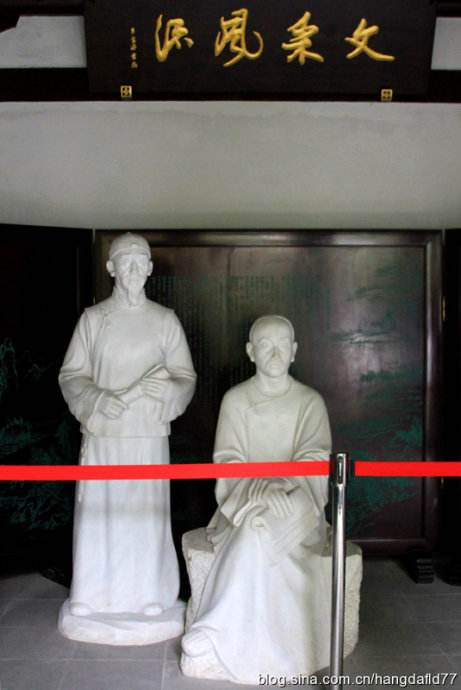
厉杭二公祠
厉杭二公祠是西溪专门奉祀文人的祠堂之一，与秋雪庵两浙词人祠齐名。供奉的二公，一位是厉鹗，字太鸿，号樊榭，是康熙举人；另一位是杭世骏，字太宗，号堇浦、秦亭老民，为雍正举人。两公都是清代杭城的著名学者和诗人。该景点主要恢复文人墨客雅聚功能，可供人切磋诗艺、挥毫泼墨、题诗作画，具有较浓厚的文化氛围。
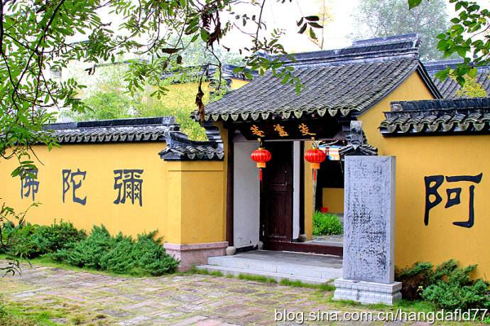
茭芦庵
茭芦庵，又名芦庵、正等院，宋绍兴年间（1131-1162），侍卫马军司驻屯于杭州西溪湿地一带，因奉祀所需，于龙驹坞建正等院。明万历初年（1573），正等院释如觉将院迁往河渚，初名正等庵。明末整修时，由董其昌题额。交芦庵是西溪历史上的著名寺庵之一，是文人墨客雅聚切磋诗艺、书画之所。
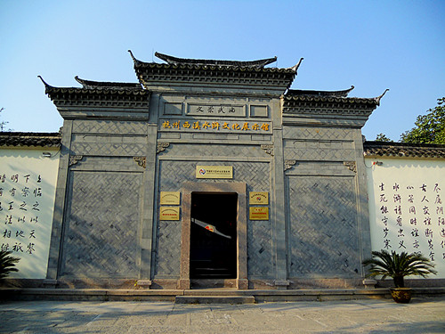
西溪水浒文化展示馆
杭州西溪水浒文化展示馆在西溪湿地内，展示馆旁有水浒传作者施耐庵的雕像。展示馆内有练功厅和模仿忠义堂摆了一些交椅大厅。展示馆的两边内壁以壁画形式表现水浒英雄—林冲的斗争场景和水浒中好汉的见义勇为的故事；外墙上是水浒英雄的画像，栩栩如生。
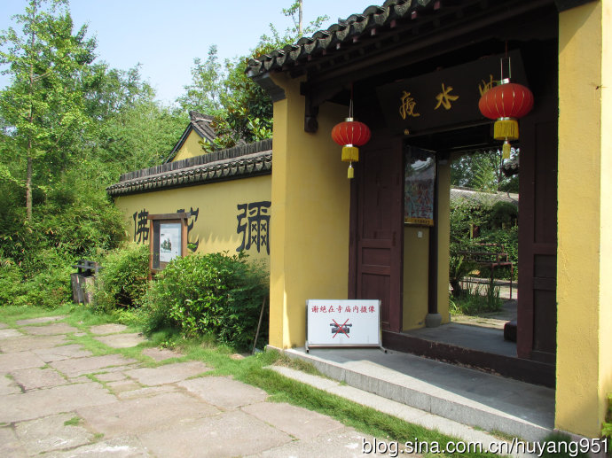
曲水庵
曲水庵位于杭州西溪湿地公园交芦庵之东、正等院之左。明祟祯元年(公元1628年)云栖古德禅师重新创建。依溪筑一庵，门迎曲水，非舟莫渡，故名“曲水庵”。檐廊上悬“曲水庵”三字牌额，系奥严居士调御所题。又题匾额曰：“古先生之庐”。
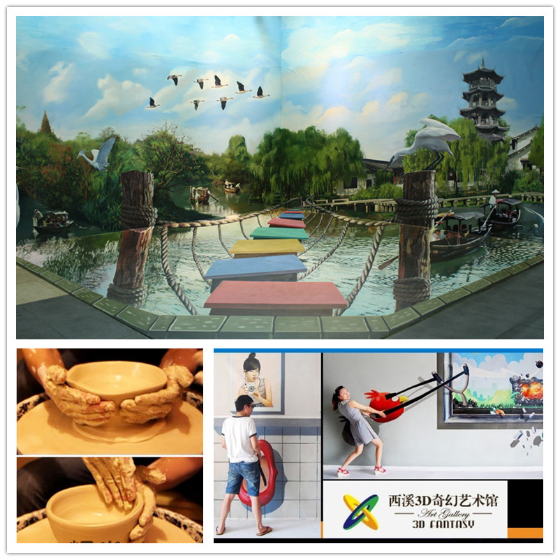
3d艺术馆
奇幻艺术将普通的平面介质变成3次元立体介质的视觉效果，将传统绘画概念转变成全新的艺术形式。再融入现代科技元素与现代生活元素，另其不仅可以观看，更可以生临其境亲身体验。
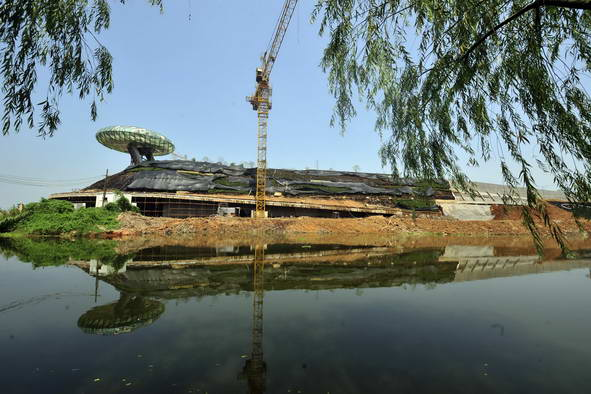
中国湿地博物馆
中国湿地博物馆是国家林业局批复同意建设的中国唯一的一座国家级的湿地博物馆，是国内第一个集城市湿地、农耕湿地、文化湿地于一体的国家湿地公园，是集收藏、研究、展示、教育、娱乐于一体的专业性博物馆。
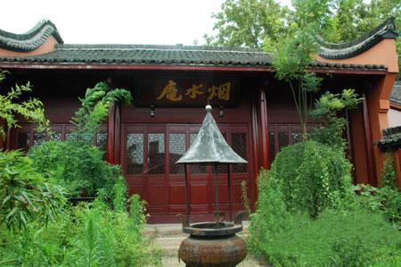
烟水庵
又名慈云庵，建于南宋。《西溪梵隐志》载：“在蒹葭深处。蒋檀越舍地，圆明募建”。初建年代约在南宋咸淳年间，清光绪年间重建，改名烟水庵。烟水庵择地幽胜，2005年重修。
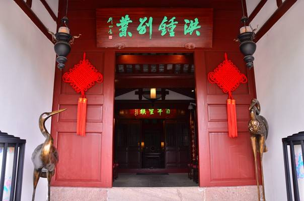
洪钟别业
洪钟别业位于高庄旁，明代成化年间刑部尚书洪钟（字宜之）晚年退隐回籍时，在西溪建造的别业。别业内由宅院（三瑞堂、归舣居、香雪堂、沁芳楼等）和书院（竹清山房、清平山堂、萝荫阁、抱月轩等）等建筑组合而成。